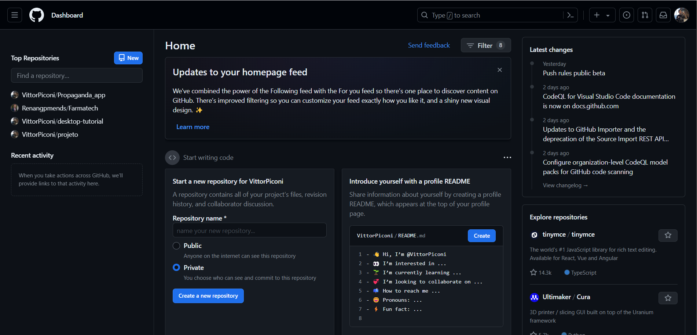
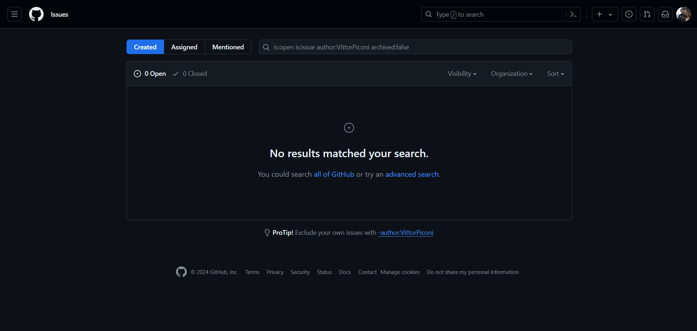
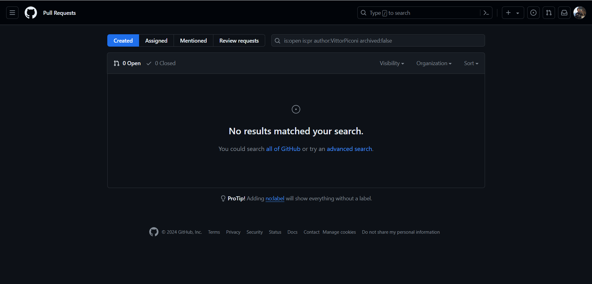
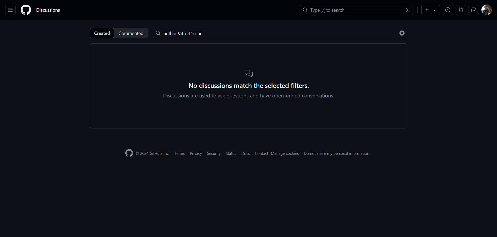
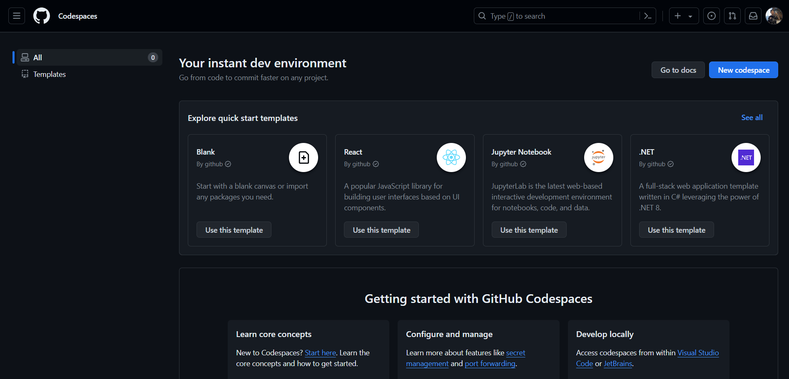
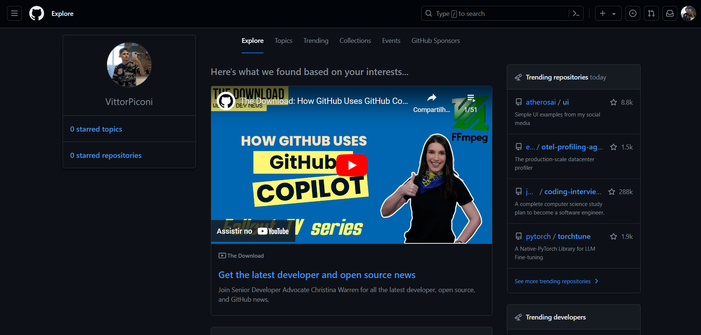
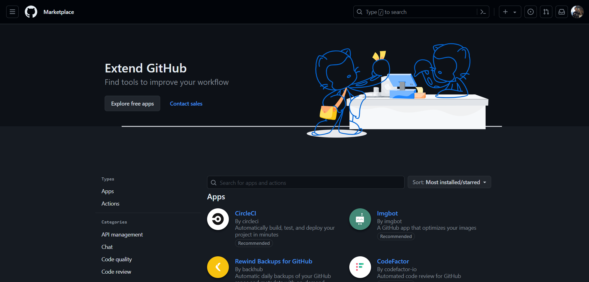

Desktop Git Hub
O GitHub Desktop é uma ferramenta amigável que facilita a interação com o GitHub diretamente do seu computador. Com ele, você pode gerenciar seus repositórios, fazer commit e push das suas alterações com apenas alguns cliques, e até mesmo criar branches para trabalhar em novas funcionalidades sem interferir no código principal. Ele oferece uma interface intuitiva, tornando o controle de versões e colaboração em projetos mais acessível, mesmo para aqueles que não estão familiarizados com linha de comando. Além disso, o GitHub Desktop sincroniza perfeitamente com a plataforma online, mantendo todos os seus projetos atualizados e acessíveis em qualquer lugar.
Menu Principal
No menu principal do github temos os seguintes titulos Home, Issues, Pull requests, Projects, Discussions, Codespaces, Explore e Marketplace.
| Home: é como o ponto de partida personalizado para você na plataforma. É como uma mistura de um feed de notícias e uma vitrine de loja, mas para projetos de software. Ele mostra o que está acontecendo nos projetos em que você está envolvido, como atualizações recentes e discussões em andamento. Também sugere novos projetos com base nos seus interesses e atividades anteriores. É como ter uma visão personalizada do universo do GitHub, adaptada especialmente para você. |  |
|  | Issues: é como uma sala de controle para problemas, sugestões e discussões em seus projetos no GitHub. É onde você pode relatar bugs, solicitar novos recursos e discutir mudanças no código. É como um quadro de avisos digital onde você pode ver o que precisa ser feito, quem está trabalhando em quê e como as coisas estão progredindo. É um lugar para colaboração, onde você pode trabalhar com sua equipe para resolver problemas e melhorar seu projeto juntos. |
| Pull Requests: são como convites para colaboração em seus projetos no GitHub. Elas são como uma porta de entrada para que outros contribuam com alterações em seu código. É onde as pessoas sugerem mudanças, como correções de bugs ou adições de novos recursos, e você pode revisá-las, discuti-las e, se estiverem boas, mesclá-las ao seu código principal. É como uma ponte que conecta diferentes partes do seu projeto, permitindo que você trabalhe em equipe de maneira organizada e eficiente. |  |
|  | Discussions: é onde as conversas acontecem em seus projetos no GitHub. É como um fórum incorporado ao seu repositório, onde você e outros membros da comunidade podem discutir ideias, fazer perguntas e colaborar de forma mais ampla além do código. É um espaço para trocar insights, receber feedback e construir uma comunidade em torno do seu projeto. É como uma sala de reuniões virtual onde todos são bem-vindos para participar e contribuir para o crescimento e sucesso do projeto |
| Codespaces: é uma funcionalidade do GitHub que permite criar, editar e colaborar em projetos diretamente do navegador. É como ter um ambiente de desenvolvimento totalmente funcional hospedado na nuvem, onde você pode acessar seus projetos de qualquer lugar, sem precisar configurar nada em seu próprio computador. Com Codespaces, você pode desenvolver código rapidamente, testar novas ideias e colaborar com outras pessoas de forma eficiente, tudo dentro do navegador. É uma maneira conveniente e flexível de trabalhar em seus projetos, especialmente para equipes distribuídas ou para quem precisa de ambientes de desenvolvimento consistentes em diferentes dispositivos. |  |
|  | Explore: é como uma janela para o vasto ecossistema de projetos e comunidades no GitHub. É onde você pode descobrir novos projetos interessantes, explorar tendências populares e encontrar inspiração para seus próprios projetos. É como um mapa interativo que o guia através de uma infinidade de repositórios, usuários e tópicos, permitindo que você mergulhe em diferentes áreas de interesse e encontre projetos que possam despertar sua curiosidade. É uma maneira de se conectar com a comunidade do GitHub, descobrir o que está acontecendo e encontrar novas oportunidades de colaboração e aprendizado. |
| Marketplace: é como uma loja de aplicativos para o GitHub, oferecendo uma variedade de ferramentas, integrações e recursos adicionais para melhorar sua experiência de desenvolvimento. É onde você pode encontrar extensões, serviços e soluções desenvolvidas pela comunidade e por empresas parceiras, projetadas para complementar e estender as funcionalidades do GitHub. É como um hub central onde você pode navegar por uma variedade de opções para automatizar fluxos de trabalho, melhorar a qualidade do código, realizar integrações com outras ferramentas e muito mais. É uma fonte valiosa de recursos para ajudar a tornar seu processo de desenvolvimento mais eficiente e produtivo. |  |